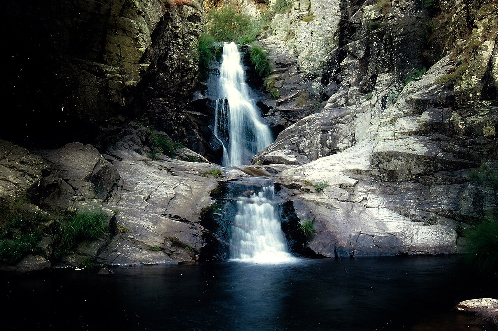

Cascadas del Purgatorio (Rascafría)
Las cascadas del Purgatorio, en Rascafría, son una de las rutas más populares de la Sierra Norte de Madrid. El sendero sigue el arroyo del Aguilón desde el puente del Perdón, cerca del monasterio de Santa María del Paular, y permite conocer pozas naturales y cascadas entre pinos y robles. Hay dos variantes: unos 16 km desde Rascafría o unos 11 km desde Las Presillas, con dificultad fácil a moderada según el tramo.
